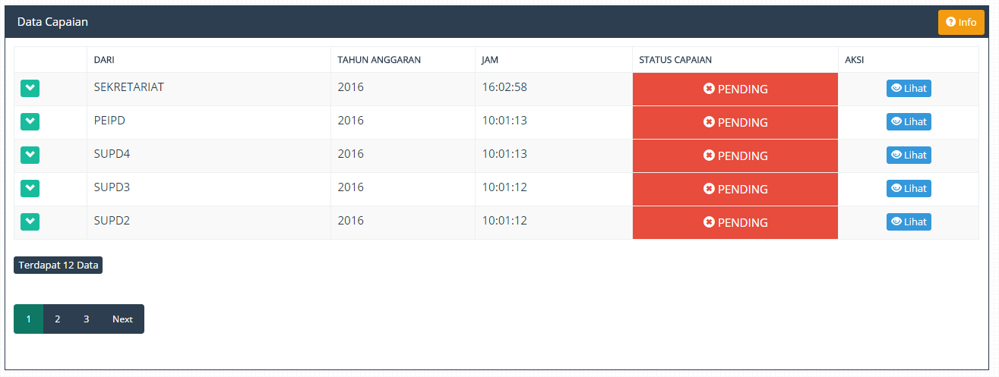

Capaian merupakan Data yang berisikan Capaian Realisasi Rencana Kerja Setiap Direktorat / Bagian , proses pengisian data Capaian ini dilakukan guna melihat target kinerja setiap Direktorat .
1. Pengisian Data Capaian
1. Masuk Ke Menu "RENCANA KERJA".
2. Klik Menu "Data Capaian Renja".
3. Klik Tombol "Lihat" di Pojok Kanan.

Gambar Data Capaian
4. Pengisian Capaian Bisa Dilakukan Dengan Memilih Salah Satu Dari 5 Tab yang Tersedia , Diantaranya
Gambar Data Komponen Capaian
5. Pilih Salah Satu Tab Yang Diisi (Misalkan Tab Capaian Kinerja), Capaian Terbagi Menjadi 2 Tab
Gambar Data Komponen Capaian , Target da Realisasi
6. Pilih Salah Satu Antara Target dan Realisasi. Kemudian isi pada bagian Kolom tang berada disebelah kanan , Yange berada Pada kolom Bulan / Triwulan, Kemudian isikan Dengan Angka yang Diinginkan.
Gambar Pengisian Data Capaian
7. Bila Sudah tinggal tekan Tombol "Centang".
Created with the Personal Edition of HelpNDoc: Free EPub producer